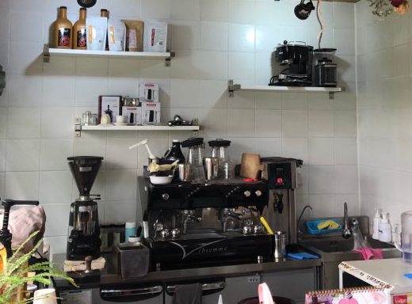
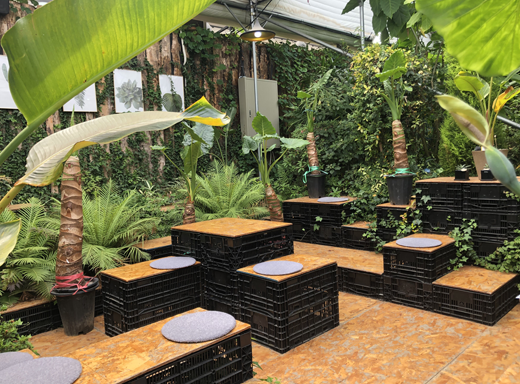
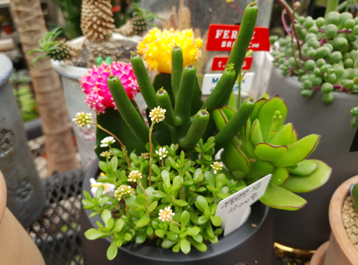

<!-- <!DOCTYPE html>
<html lang="en">
<head>
    <meta charset="UTF-8">
    <meta name="viewport" content="width=device-width, initial-scale=1.0">
    <title>Document</title>
    <style>
        @import url(https://fonts.googleapis.com/css?family=Raleway:400,500,800);
figure.snip1200 {
  font-family: 'Raleway', Arial, sans-serif;
  position: relative;
  overflow: hidden;
  margin: 10px;
  min-width: 220px;
  max-width: 50%;
  /* max-height: 500px; */
  width: 100%;
  background: #000000;
  color: #ffffff;
  text-align: center;
  box-shadow: 0 0 5px rgba(0, 0, 0, 0.15);
  font-size: 1.4em;
}
.snip1200-box{
  display: flex;
}
figure.snip1200 * {
  -webkit-box-sizing: border-box;
  box-sizing: border-box;
  -webkit-transition: all 0.45s ease-in-out;
  transition: all 0.45s ease-in-out;
}
figure.snip1200 img {
  max-width: 100%;
  position: relative;
  opacity: 0.9;
}
figure.snip1200 figcaption {
  position: absolute;
  top: 45%;
  left: 7%;
  right: 7%;
  bottom: 45%;
  border: 1px solid white;
  border-width: 1px 1px 0;
}
figure.snip1200 .heading {
  overflow: hidden;
  -webkit-transform: translateY(50%);
  transform: translateY(50%);
  position: absolute;
  bottom: 0;
  width: 100%;
}
figure.snip1200 h2 {
  display: table;
  margin: 0 auto;
  padding: 0 10px;
  position: relative;
  text-align: center;
  width: auto;
  font-weight: 400;
}
figure.snip1200 h2 span {
  font-weight: 800;
}
figure.snip1200 h2:before,
figure.snip1200 h2:after {
  position: absolute;
  display: block;
  width: 1000%;
  height: 1px;
  content: '';
  background: white;
  top: 50%;
}
figure.snip1200 h2:before {
  left: -1000%;
}
figure.snip1200 h2:after {
  right: -1000%;
}
figure.snip1200 p {
  top: 50%;
  -webkit-transform: translateY(-50%);
  transform: translateY(-50%);
  position: absolute;
  width: 100%;
  padding: 0 20px;
  margin: 0;
  opacity: 0;
  line-height: 1.6em;
  font-size: 0.9em;
}
figure.snip1200 a {
  left: 0;
  right: 0;
  top: 0;
  bottom: 0;
  position: absolute;
  z-index: 1;
}
figure.snip1200:hover img,
figure.snip1200.hover img {
  opacity: 0.25;
  -webkit-transform: scale(1.1);
  transform: scale(1.1);
}
figure.snip1200:hover figcaption,
figure.snip1200.hover figcaption {
  top: 7%;
  bottom: 7%;
}
figure.snip1200:hover p,
figure.snip1200.hover p {
  opacity: 1;
  -webkit-transition-delay: 0.35s;
  transition-delay: 0.35s;
}
    </style>
</head>
<body>
  <div class="snip1200-box">
    <figure class="snip1200">
        
        <figcaption>
          <p>이레가든빌리지의<br>디자인정원은 식물이<br>
            살아가는 공간에<br>여러분을 초대하여 잠시<br>머무르다 가실 수 있는<br>
            여유를 제공합니다.</p>
          <div class="heading">
            <h2>DESIGN<span>GARDEN</span></h2>
          </div>
        </figcaption>
        <a href="#"></a>
      </figure>


      <figure class="snip1200">
        
        <figcaption>
            <p>이용고객분들 중 반려<br>식물을 구매하신 고객<br>
                님들께 음료쿠폰을 드<br>립니다.식물들에 둘러<br>쌓여 여유로운 차 한잔<br>어떠세요?</p>
              <div class="heading">
                <h2>CAFE<span>DRINK</span></h2>
          </div>
        </figcaption>
        <a href="#"></a>
      </figure>


      <figure class="snip1200">
        
        <figcaption>
          <p>이레가든빌리지의<br>체험수업은 성인대상인<br>
            일일플라워레슨, 가드닝<br>클래스와 미취학아동을<br>대상으로하는 식물체험<br>학습농장을 운영합니다.</p>
          <div class="heading">
            <h2>DAILY<span>LESSON</span></h2>
          </div>
        </figcaption>
        <a href="#"></a>
      </figure>
    </div>


      <script>
           /* Demo purposes only */
  $(".hover").mouseleave(
    function () {
      $(this).removeClass("hover");
    }
  );
      </script>
</body>
</html> -->
<!DOCTYPE html>
<html lang="en">
<head>
  <meta charset="UTF-8">
  <meta name="viewport" content="width=device-width, initial-scale=1.0">
  <title>Document</title>
  <style>
    #section04{
	width:100%; 
	height:1500px; 
	background:#f6eeda;}

.title2 h2{
	line-height: 4em;
	font-size: 2.5em;
	color:#165851;
	font-weight: 600;

}
.title2{
	text-align: center;

}
  </style>


<link rel="stylesheet" href="css/reset.css">
<link rel="stylesheet" href="css/nomal.css">
<link href="https://unpkg.com/aos@2.3.1/dist/aos.css" rel="stylesheet">
<link rel="stylesheet" href="css/swiper.min.css">
<link rel="stylesheet" href="css/jquery.bxslider.css">
<link rel="stylesheet" type="text/css" href="css/default.css" />
<link rel="stylesheet" type="text/css" href="css/component.css" />
</head>
<body>
  <div id="section04">
<div class="slide">
  <div></div>
  <div></div>
  <div></div>
</div>
  </div> 


  
  <script>
    


$(function(){
			$('.').slick({
				slide: 'div',		//슬라이드 되어야 할 태그 ex) div, li 
				infinite : true, 	//무한 반복 옵션	 
				slidesToShow : 4,		// 한 화면에 보여질 컨텐츠 개수
				slidesToScroll : 1,		//스크롤 한번에 움직일 컨텐츠 개수
				speed : 100,	 // 다음 버튼 누르고 다음 화면 뜨는데까지 걸리는 시간(ms)
				arrows : true, 		// 옆으로 이동하는 화살표 표시 여부
				dots : true, 		// 스크롤바 아래 점으로 페이지네이션 여부
				autoplay : true,			// 자동 스크롤 사용 여부
				autoplaySpeed : 10000, 		// 자동 스크롤 시 다음으로 넘어가는데 걸리는 시간 (ms)
				pauseOnHover : true,		// 슬라이드 이동	시 마우스 호버하면 슬라이더 멈추게 설정
				vertical : false,		// 세로 방향 슬라이드 옵션
				prevArrow : "<button type='button' class='slick-prev'>Previous</button>",		// 이전 화살표 모양 설정
				nextArrow : "<button type='button' class='slick-next'>Next</button>",		// 다음 화살표 모양 설정
				dotsClass : "slick-dots", 	//아래 나오는 페이지네이션(점) css class 지정
				draggable : true, 	//드래그 가능 여부 
				
				responsive: [ // 반응형 웹 구현 옵션
					{  
						breakpoint: 960, //화면 사이즈 960px
						settings: {
							//위에 옵션이 디폴트 , 여기에 추가하면 그걸로 변경
							slidesToShow:3 
						} 
					},
					{ 
						breakpoint: 768, //화면 사이즈 768px
						settings: {	
							//위에 옵션이 디폴트 , 여기에 추가하면 그걸로 변경
							slidesToShow:2 
						} 
					}
				]

			});
  		})

  </script>
  <script src="js/slick.min.js"></script>
  <script src="js/slick.js"></script>
</body>
</html>


